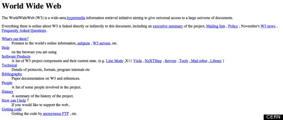

Hitos de internet

- En (1958) el gobierno de Estados Unidos de Norte América, ce ARPA (Advance Research Project Administration) en respuesta al lanzamiento del Sputnik. Si bien ARPA tenía como misión el lanzamiento de un satélite en menos de 18 meses, pronto se comenzaron a concentrar en las tecnologías de comunicación y en la redes de computadores.
- En 1974 surge TCP (Transmission Control Protocol, Protocolo de control de transmisión) como una forma de lograr la estabilidad de la red en caso de un ataque, éste protocolo se orienta al control de las transmisiones y a asegurar que los datos lleguen desde el emisor al receptor de forma correcta. En 1975 se crea el primer enlace de una red de computadores vía satélite entre Hawaii y el Reino Unido.
- 1971: Se envía el primer email. Fue enviado por Ray Tomlinson y el destinatario fue él mismo.
- 1991: Aparece las primera página web.
- 1995: Se vende el primer libro en Amazon.
- 1996: Se lanza el primer teléfono móvil con conexión a internet: Nokia 9000 Communicator.
- 2005: Se sube el primer vídeo a YouTube. Fue subido por el co-fundador de YouTube Jawed Karim.